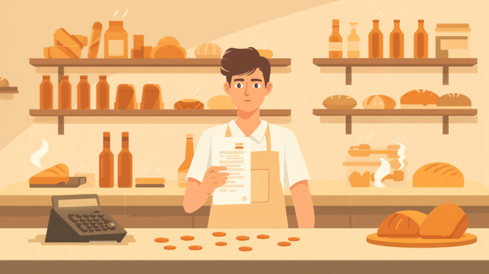

Che cosa c'è scritto in una busta paga, da dove nascono quei numeri e come si arriva, riga dopo riga, allo stipendio che entra in tasca.

È il 27 del mese. Marco Rinaldi, assunto da poco al panificio Forno Aurora di Alba, riceve dal titolare un foglio fitto di numeri: in alto il suo nome, in mezzo una tabella piena di voci mai sentite - minimo tabellare, contingenza, trattenute IRPEF - e in basso, nel riquadro più importante, una cifra: 1.928,45 euro. È la sua busta paga. Marco sapeva "quanto avrebbe preso, più o meno". Ma adesso che ha il foglio in mano, di quel foglio non capisce quasi niente.
Prima o poi capiterà anche a te. E quel giorno la differenza la farà una cosa sola: saperla leggere. Perché la busta paga non è un foglio qualsiasi: è il documento che racconta, mese dopo mese, il valore del tuo lavoro - quanto ti spetta, quanto vai a versare per la tua pensione futura, quante imposte paghi e perché.
In questo modulo impariamo a leggerla riga per riga: da dove nasce la retribuzione, che cosa sono i contributi e a che cosa servono INPS e INAIL, come funziona l'IRPEF con i suoi scaglioni, e come si arriva - passaggio dopo passaggio - dal lordo al netto. Alla fine quel foglio non avrà più segreti: né per Marco, né per te.
Che cosa scoprirai in questo modulo
Il percorso in sei tappe, dal primo stipendio al TFR.
1
La retribuzione
2
Le voci della paga
3
I contributi
4
Le imposte
5
La busta paga completa
6
Il TFR e oltre
01
Definizione
La retribuzione.
Tutto parte da qui. Quando Marco ha firmato il contratto con il Forno Aurora è diventato un lavoratore subordinato: come dice l'articolo 2094 del Codice Civile, presta la propria attività alle dipendenze e sotto la direzione dell'imprenditore, e in cambio riceve una retribuzione. La retribuzione è il prezzo del lavoro: il compenso che spetta al lavoratore per l'attività svolta. Se riguarda operai e lavori esecutivi si chiama tradizionalmente salario; per impiegati, quadri e dirigenti si parla di stipendio.
Ma quanto deve essere questa retribuzione? Può il datore di lavoro offrire la cifra che vuole? No. La regola più importante sta nella Costituzione:
Il lavoratore ha diritto ad una retribuzione proporzionata alla quantità e qualità del suo lavoro e in ogni caso sufficiente ad assicurare a sé e alla famiglia un'esistenza libera e dignitosa.
Articolo 36 della Costituzione · da ricordare
Due aggettivi, due garanzie:
proporzionata → chi lavora di più, o svolge mansioni più difficili e di maggiore responsabilità, deve guadagnare di più. Per questo un capo pasticcere guadagna più di un aiutante, e le ore di straordinario si pagano con una maggiorazione;
sufficiente → anche il lavoro più semplice deve garantire una vita dignitosa al lavoratore e alla sua famiglia. Sotto una certa soglia non si può scendere, qualunque sia il lavoro.
L'articolo 36 fissa il principio, ma non dice le cifre. Chi stabilisce, allora, che il minimo di un operaio panificatore di quarto livello è proprio 1.508,00 euro? È la domanda della prossima card - e la risposta è una sigla che in busta paga incontrerai sempre: CCNL.
Il mese dello stipendio.
Dalla prima ora di lavoro all'accredito: le cinque tappe.
Lavori
tutto il mese
1
2
Si elabora
l'ufficio paghe prepara il cedolino
Lo ricevi
il tuo cedolino
3
4
Accredito
lo stipendio arriva sul conto
Controlli
e lo metti via
5
02
Le regole
Chi decide quanto si guadagna: il CCNL.
In Italia la retribuzione non viene decisa da ogni datore di lavoro per conto suo. Viene stabilita, per interi settori, da grandi accordi chiamati Contratti Collettivi Nazionali di Lavoro (CCNL). A firmarli sono le due "squadre" che rappresentano il mondo del lavoro:
da una parte i sindacati dei lavoratori - i più rappresentativi sono CGIL, CISL e UIL - che difendono gli interessi di chi lavora;
dall'altra le associazioni dei datori di lavoro - come Confindustria per le grandi industrie, Confcommercio per il commercio, Confartigianato per gli artigiani - che rappresentano le imprese.
Il CCNL fissa le regole essenziali di un intero settore: i minimi salariali per ciascun livello di inquadramento, l'orario di lavoro, le maggiorazioni per gli straordinari, le ferie, le mensilità aggiuntive. Un panificio artigianale di Alba, un supermercato di Torino e un'officina meccanica di Cuneo applicano CCNL diversi, ma tutti garantiscono ai propri dipendenti almeno le condizioni firmate a livello nazionale.
I tre livelli funzionano come una scala: il CCNL nazionale fissa la base sotto la quale non si può scendere, il contratto aziendale o territoriale può aggiungere qualcosa, e l'accordo individuale può migliorare ancora la posizione del singolo lavoratore - mai peggiorarla. Il panificio di Marco applica il CCNL Alimentari Artigianato, il contratto delle aziende artigiane del settore alimentare: panifici, pasticcerie, pastifici e affini.
03
Le voci · Elementi fissi
Gli elementi fissi della paga.
Apriamo finalmente la busta paga di Marco e cominciamo dalle voci che ci sono tutti i mesi, sempre uguali: gli elementi fissi. Sono lo "zoccolo duro" dello stipendio, la parte che non dipende da quanto è andata quella particolare mensilità.
Minimo tabellare → la paga base fissata dal CCNL per il livello di inquadramento. Si chiama "tabellare" perché si legge in una tabella: a ogni livello il suo importo. Marco è un operaio panificatore di quarto livello: per quel livello la tabella dice 1.508,00 euro;
Indennità di contingenza → una voce "storica": nata per adeguare automaticamente i salari al costo della vita, è stata congelata nel 1992 e da allora resta in busta come importo fisso (per Marco 524,22 euro);
EDR (elemento distinto della retribuzione) → altra voce nata dagli accordi del 1992: 10,33 euro al mese, uguali per quasi tutti;
Scatti di anzianità → aumenti automatici che maturano restando nella stessa azienda: ogni due o tre anni (lo dice il CCNL) "scatta" un piccolo aumento. Marco lavora al Forno Aurora da anni e ha maturato due scatti da 25,00 euro l'uno.
La parte fissa della busta di Marco · marzo
Minimo tabellare (4° livello)€ 1.508,00
Indennità di contingenza€ 524,22
EDR€ 10,33
Scatti di anzianità (2 × 25,00)€ 50,00
Totale elementi fissi€ 2.092,55
Questi importi Marco se li ritroverà uguali ad aprile, a maggio, a giugno. È la parte stabile della retribuzione: quella su cui una persona può contare per pagare l'affitto e programmare le spese. Ma il lavoro vero ha anche mesi più intensi e mesi più leggeri: per questo esistono le voci della prossima card.
Il minimo cresce col livello.
Marco è al quarto livello: salendo d'inquadramento, sale anche il minimo tabellare.
4º
3º
2º
1º
4º livello
si comincia qui
3º livello
più autonomia
2º livello
più responsabilità
1º livello
minimo più alto
04
Le voci · Elementi accessori
Gli elementi accessori.
Gli elementi accessori sono le voci che cambiano da un mese all'altro, perché dipendono da come è andato quel mese: quante ore in più hai lavorato, in quali turni, con quali risultati. Sono il termometro della singola mensilità.
Straordinario → le ore oltre l'orario normale (di regola 40 alla settimana) si pagano di più: il CCNL fissa una maggiorazione percentuale, più alta se lo straordinario è notturno o festivo. A marzo Marco ha fatto 8 ore di straordinario diurno a 12,27 euro l'ora, maggiorazione compresa: 98,16 euro;
Indennità → somme aggiuntive per condizioni particolari di lavoro: il turno di notte del panificatore, la domenica del commesso del supermercato, la trasferta del montatore. Compensano un disagio;
Premi → compensi legati ai risultati: di produzione, di qualità, di presenza. Spesso nascono dal contratto aziendale. Al Forno Aurora il titolare ha concordato un premio di produzione: a marzo vale 120,00 euro;
Superminimo → la parte di paga sopra il minimo del CCNL che il datore riconosce al singolo lavoratore, di solito per trattenerlo o premiarne la professionalità. È l'accordo individuale del "terzo livello" che hai visto nella card 02.
Gli accessori di Marco · marzo
Straordinario diurno (8 ore × 12,27)€ 98,16
Premio di produzione€ 120,00
Totale elementi accessori€ 218,16
Fissi più accessori: 2.092,55 + 218,16 = 2.310,71 euro. Questa è la retribuzione lorda di Marco per il mese di marzo. "Lorda" perché - lo vedrai nel prossimo blocco - da qui bisogna ancora togliere contributi e imposte: nessun lavoratore riceve in tasca il lordo.
05
Le voci · Mensilità aggiuntive
Tredicesima, quattordicesima, fringe benefit.
Dicembre è il mese preferito dei lavoratori dipendenti, e non solo per le feste: arriva la tredicesima, una mensilità intera in più. Non è un regalo: è retribuzione che il lavoratore matura un poco ogni mese - un dodicesimo a mensilità - e che l'azienda mette da parte per pagarla tutta insieme prima di Natale. Chi ha lavorato solo sei mesi, riceverà sei dodicesimi.
Alcuni CCNL - per esempio quello del commercio e diversi contratti dell'alimentare - prevedono anche la quattordicesima, di solito pagata a giugno, all'inizio dell'estate. Il contratto di Marco prevede tredici mensilità: un dettaglio che ritroverai nei calcoli, perché quando si stima il reddito di un anno intero bisogna moltiplicare la paga mensile per tredici, non per dodici.
Accanto al denaro, il datore può riconoscere compensi in natura: i fringe benefit. Sono beni e servizi che non passano per il portafoglio ma hanno un valore reale: i buoni pasto, l'auto aziendale, il telefono, i buoni spesa. Entro certi limiti di valore fissati dalla legge non pagano imposte: per questo le aziende li usano volentieri per integrare la retribuzione. Un supermercato può dare ai cassieri i buoni pasto; un'impresa edile può dare al capocantiere il furgone anche per l'uso personale; una software house può offrire ai dipendenti l'abbonamento ai mezzi.
Con questa card conosci tutte le voci positive della busta: quelle che costruiscono la retribuzione lorda. Il primo blocco si chiude con una mappa d'insieme: il viaggio che quei soldi devono ancora fare prima di arrivare in tasca.
06
Il quadro
Dal lordo al netto: la mappa del viaggio.
La retribuzione lorda di Marco è 2.310,71 euro, ma sul suo conto ne arriveranno 1.928,45. Dove finisce la differenza? Non sparisce: fa due fermate obbligatorie - i contributi e le imposte - che sono l'argomento dei prossimi due blocchi. Eccola qui sotto, disegnata come una mappa concettuale: ogni freccia è un passaggio, i cerchietti dicono se si aggiunge o si toglie.
Tieni questa mappa come bussola: tutto il resto del modulo è dentro questo disegno. Il blocco 2 apre la prima fermata (i contributi, con INPS e INAIL), il blocco 3 la seconda (l'IRPEF, le detrazioni, le addizionali), e alla fine rimetteremo insieme tutti i pezzi nella busta paga completa di Marco.
07
I contributi · Il perché
Perché una parte dello stipendio non arriva in tasca.
Siamo arrivati alla prima "fermata" della mappa: dei 2.310,71 euro lordi di Marco, 212,35 euro se ne vanno prima ancora che lo stipendio venga pagato. Sono i contributi previdenziali. Verrebbe da pensare a una tassa, ma non lo è: quei soldi non finanziano strade o ospedali, tornano ai lavoratori nei momenti in cui il reddito viene a mancare. È un'idea scritta nella Costituzione:
I lavoratori hanno diritto che siano preveduti ed assicurati mezzi adeguati alle loro esigenze di vita in caso di infortunio, malattia, invalidità e vecchiaia, disoccupazione involontaria.
Articolo 38 della Costituzione · da ricordare
Questo sistema si chiama previdenza sociale: "previdenza" viene da prevedere. Nessuno, da solo, riuscirebbe a mettere da parte abbastanza per affrontare una vecchiaia di trent'anni, un infortunio serio o un periodo di disoccupazione. Per questo lo Stato ha creato delle assicurazioni obbligatorie: ogni mese una quota della retribuzione di tutti i lavoratori confluisce in un fondo comune, e da quel fondo escono le pensioni e i sostegni di chi ne ha bisogno oggi.
Nota bene: i contributi che Marco versa oggi non finiscono in un salvadanaio con il suo nome sopra - pagano le pensioni di chi è anziano adesso. Quando toccherà a lui, la sua pensione la pagheranno i lavoratori di domani. È un patto fra generazioni, e funziona solo se tutti versano: ecco perché il lavoro "in nero", senza contributi, è un danno prima di tutto per il lavoratore stesso. A gestire questo grande meccanismo sono due enti pubblici che ora conosciamo da vicino: INPS e INAIL.
08
I contributi · L'INPS
L'INPS, il grande salvadanaio collettivo.
L'INPS - Istituto Nazionale della Previdenza Sociale - è il principale ente previdenziale italiano: raccoglie i contributi di quasi tutti i lavoratori e li trasforma in prestazioni. È uno degli enti pubblici più grandi d'Europa: gestisce le pensioni di oltre sedici milioni di persone. Il suo compito, in una frase: sostituire il reddito quando il lavoro non può darlo.
Le sue prestazioni principali sono quattro famiglie:
Per Marco, oggi, l'INPS è solo una riga di trattenuta: 212,35 euro al mese. Ma quella riga è il suo biglietto d'ingresso a tutte le tutele di questa card: la pensione che avrà, la NASpI se il panificio un giorno chiudesse, l'indennità se si ammalasse. Ogni contributo versato costruisce la sua posizione contributiva: il conto personale, custodito dall'INPS, dove sono registrate tutte le settimane di lavoro della sua vita.
09
I contributi · L'INAIL
L'INAIL, l'assicurazione di chi lavora.
Accanto all'INPS lavora l'INAIL - Istituto Nazionale per l'Assicurazione contro gli Infortuni sul Lavoro. Se l'INPS protegge il reddito, l'INAIL protegge la persona: interviene quando il lavoro fa male, con un infortunio improvviso o con una malattia che arriva piano, dopo anni di gesti ripetuti, polveri respirate, pesi sollevati.
Nota la differenza importante: il premio INAIL è interamente a carico del datore di lavoro. Nella busta paga di Marco non troverai nessuna trattenuta INAIL: il fornaio paga l'assicurazione, e paga di più se il lavoro è più rischioso - l'aliquota di un impiegato che sta alla scrivania è molto più bassa di quella di chi lavora ogni notte con forni a duecentocinquanta gradi e impastatrici in movimento. Per il panificio è un costo; per Marco è la certezza che, se succede qualcosa, non resta solo.
10
I contributi · Chi paga
Chi li paga davvero: il conto dei contributi.
Ed eccoci al conto. La sorpresa è che la trattenuta di Marco è solo la parte piccola dei contributi: la quota a carico del lavoratore è il 9,19 % della retribuzione lorda, ma il datore di lavoro ne versa un'altra, molto più grande - all'incirca il 30 % - che in busta paga non si vede, perché si aggiunge sopra il lordo. Per questo si dice che un dipendente "costa" all'azienda molto più del suo stipendio.
Attenzione a un dettaglio che inganna: anche la quota del lavoratore, quella trattenuta a Marco, non la versa Marco. Il datore la trattiene dalla busta e la versa lui all'INPS, insieme alla propria, entro il giorno 16 del mese successivo. Il lavoratore non deve fare nulla: il sistema è costruito perché i contributi arrivino a destinazione da soli.
Tolti i contributi, sulla busta di Marco resta la cifra su cui lo Stato calcola le imposte: 2.310,71 − 212,35 = 2.098,36 euro di imponibile fiscale. Ed è qui che entra in scena la protagonista del prossimo gruppo di card: l'IRPEF.
11
Le imposte · L'IRPEF
L'IRPEF e il sostituto d'imposta.
Sistemati i contributi, sull'imponibile fiscale di Marco - 2.098,36 euro - arriva la seconda fermata: le ritenute fiscali. La protagonista è l'IRPEF, l'Imposta sul Reddito delle Persone Fisiche: la più importante imposta italiana, quella che da sola vale circa un terzo di tutte le entrate dello Stato.
Prima curiosità: Marco quest'imposta non la verserà mai di persona. La legge affida il compito al datore di lavoro, che ogni mese trattiene l'IRPEF dalla busta e la versa allo Stato al posto suo. Per questo il datore si chiama sostituto d'imposta: si "sostituisce" al lavoratore nel pagare l'imposta. Il lavoratore riceve lo stipendio già al netto, senza calcoli né scadenze da ricordare.
Seconda caratteristica, scritta anche questa nella Costituzione (articolo 53: "Il sistema tributario è informato a criteri di progressività"): l'IRPEF è progressiva. Non "chi più guadagna più paga" e basta - quello lo farebbe anche un'aliquota unica - ma chi più guadagna paga in proporzione di più. Il meccanismo che lo rende possibile sono gli scaglioni: il reddito viene "affettato" in fasce, e ogni fascia paga la sua aliquota.
L'errore classico da non fare mai: pensare che chi guadagna 30.000 euro paghi il 35 % su tutto. No: paga il 23 % sui primi 28.000 e il 35 % solo sui 2.000 che superano il gradino. Nessun aumento di stipendio può mai "non convenire" per colpa delle aliquote: si sale la scala un gradino alla volta, e ogni gradino tassa solo la parte di reddito che gli appartiene.
12
Le imposte · Il calcolo
Dall'IRPEF lorda all'IRPEF netta: le detrazioni.
Facciamo il conto sulla busta di Marco. Il suo imponibile mensile è 2.098,36 euro; il contratto prevede tredici mensilità, quindi il suo reddito annuo presunto è 2.098,36 × 13 = 27.278,68 euro: sta tutto nel primo scaglione. La sua IRPEF si calcola quindi con l'aliquota del 23 %:
L'IRPEF lorda di Marco · marzo
Imponibile fiscale del mese€ 2.098,36
Aliquota del primo scaglione23 %
IRPEF lorda (2.098,36 × 23 %)€ 482,62
Ma 482,62 euro non è la cifra che Marco pagherà davvero. La legge riconosce le detrazioni d'imposta: somme che si sottraggono direttamente dall'imposta, non dal reddito - ed è una differenza enorme, perché un euro di detrazione è un euro di tasse in meno, per tutti allo stesso modo. Le principali:
per lavoro dipendente → spettano a chi lavora come dipendente, e sono più alte per i redditi più bassi: proteggono chi guadagna meno;
per familiari a carico → per il coniuge e i figli senza redditi propri. Marco ha la moglie a carico e un figlio di ventiquattro anni che studia all'università: contano entrambi;
per spese particolari → mediche, mutuo prima casa, istruzione, veterinarie... queste però si fanno valere dopo, con la dichiarazione dei redditi.
Per stabilire quanto spetta a Marco, il datore usa il suo reddito annuo presunto (i 27.278,68 euro di prima). Le sue detrazioni valgono 367,35 euro al mese. Il conto finale: 482,62 − 367,35 = 115,27 euro di IRPEF netta. Da quasi cinquecento euro a poco più di cento: ecco perché le detrazioni sono il pezzo del calcolo che cambia di più la vita - e la busta - delle persone.
13
Le imposte · Le addizionali
Le addizionali: la parte di Regione e Comune.
L'IRPEF non finisce tutta a Roma. Sopra l'imposta nazionale si "appoggiano" due piccole imposte locali, calcolate sullo stesso imponibile: l'addizionale regionale, decisa da ciascuna Regione, e l'addizionale comunale, decisa dal Comune di residenza. Servono a finanziare quello che Regione e Comune fanno ogni giorno - dalla sanità ai servizi locali - e cambiano da luogo a luogo: due colleghi con lo stesso stipendio, uno residente ad Alba e uno a Torino, pagano addizionali diverse.
Le addizionali hanno una regola tutta loro, che sorprende sempre: si calcolano sul reddito dell'anno precedente, e si pagano a rate nell'anno successivo, spalmate sulle mensilità per non pesare troppo. Nella busta di marzo di Marco ci sono quindi le rate delle addizionali calcolate sul suo reddito dell'anno scorso: 44,36 euro di regionale (Piemonte) e 10,28 euro di comunale (Alba: 6,75 di saldo più 3,53 di acconto per l'anno in corso).
E le buone notizie? Esistono anche voci che si aggiungono invece di togliere. La più importante è il trattamento integrativo (l'ex "bonus Renzi"): fino a 1.200 euro l'anno che lo Stato riconosce ai redditi da lavoro dipendente più bassi, direttamente in busta. E per chi ha coniuge, fratelli o sorelle a carico restano gli assegni per il nucleo familiare, mentre per i figli c'è l'Assegno Unico pagato dall'INPS che hai visto nella card 08. A Marco, questo mese, non spetta nessuna delle due voci: il suo reddito supera la soglia del trattamento integrativo e per il figlio riceve già l'Assegno Unico fuori busta.
Con questo, il viaggio delle trattenute è completo: contributi, IRPEF, addizionali. È ora di rimettere insieme tutti i pezzi e leggere, finalmente, la busta paga intera.
14
La busta completa · Il documento
La busta paga sotto la lente.
Il foglio paga - o busta paga, o cedolino: tre nomi per lo stesso documento - è il prospetto che il datore deve consegnare al lavoratore ogni mese, insieme allo stipendio. La legge non impone un modello unico: ogni programma paghe lo disegna a modo suo. Ma sotto qualunque veste grafica, la struttura è sempre la stessa, in tre zone:
La testata dice chi sei per l'azienda: nome, qualifica, livello di inquadramento, matricola, contratto applicato, periodo di paga. Il corpo è il racconto del mese: prima le voci che costruiscono la retribuzione, poi le trattenute che la riducono. Il piede tira le somme: gli imponibili, il TFR accantonato e - nel riquadro più guardato d'Italia - il netto in busta.
Da domani, quando vedrai una busta paga vera - di un genitore, di un datore di stage, un giorno la tua - prova questo esercizio: individua le tre zone. Funziona con qualsiasi cedolino, dal panificio sotto casa alla grande industria.
15
La busta completa · Il conto
Il conto completo, dall'inizio alla fine.
Rimettiamo in fila tutto il viaggio della busta di Marco, senza saltare un passaggio. Questo specchietto è lo schema di liquidazione: imparalo bene, perché è la spina dorsale di ogni esercizio che farai.
La busta di Marco Rinaldi · marzo · dal lordo al netto
Elementi fissi (minimo, contingenza, EDR, scatti)€ 2.092,55
+ Elementi accessori (straordinario, premio)€ 218,16
= Retribuzione lorda€ 2.310,71
− Contributi INPS a carico del lavoratore (9,19 %)€ 212,35
= Imponibile fiscale€ 2.098,36
IRPEF lorda (23 % per scaglioni)€ 482,62
− Detrazioni (lavoro dipendente e familiari)€ 367,35
Nota come ogni riga di questo schema sia una card che hai già letto: le voci (card 03-05), i contributi (07-10), l'IRPEF e le detrazioni (11-12), le addizionali (13). La busta paga non è altro che tutto il modulo, compresso in un foglio. E questo stesso conto, con questi stessi numeri, lo rifarai tu - voce per voce, da un foglio bianco - nell'app Cedolino Facile: la trovi nella sezione Esercizi.
16
Il TFR e oltre · Il TFR
Il TFR: lo stipendio che ti aspetta.
C'è una voce della busta che non entra mai in tasca, eppure è tra le più preziose: il TFR, Trattamento di Fine Rapporto - la vecchia "liquidazione". Ogni mese il datore accantona una quota della retribuzione di Marco, che gli verrà consegnata tutta insieme quando il rapporto di lavoro finirà: per pensionamento, per dimissioni o per licenziamento, non importa - il TFR spetta sempre.
Quanto si accantona → la retribuzione annua divisa per 13,5: in pratica circa il 7,4 % all'anno. Per Marco: 2.310,71 × 13 mensilità = 30.039,23 euro l'anno, diviso 13,5 = 2.225,13 euro messi da parte ogni anno;
Come cresce → il "gruzzolo" accantonato in azienda si rivaluta ogni anno: 1,5 % fisso più il 75 % dell'inflazione. Così, negli anni, non perde valore;
Dove va → entro sei mesi dall'assunzione il lavoratore sceglie: lasciarlo in azienda (e lo custodisce il datore) oppure destinarlo a un fondo pensione, dove viene investito per costruire una pensione integrativa. È una delle prime scelte finanziarie importanti della vita;
L'anticipo → dopo otto anni di servizio se ne può chiedere in anticipo fino al 70 %, per comprare la prima casa o per spese sanitarie importanti.
Dopo dieci anni al Forno Aurora, tra quota e rivalutazioni, Marco avrà da parte più di ventitremila euro: uno stipendio differito che matura in silenzio, mese dopo mese, scritto in piccolo nel piede della sua busta.
17
Il TFR e oltre · L'anno fiscale
Il conguaglio, la CU e il 730.
Le trattenute che hai visto finora sono, in fondo, delle previsioni: ogni mese il datore calcola l'IRPEF come se quel mese si ripetesse uguale tutto l'anno. Ma l'anno vero è fatto di straordinari che vanno e vengono, premi, aumenti. Per questo, con l'ultima busta dell'anno, il datore fa il conguaglio: ricalcola l'imposta sull'intero reddito effettivo e sistema la differenza - se ha trattenuto troppo la restituisce, se ha trattenuto poco la recupera.
Entro marzo, poi, il datore consegna a Marco la CU - la Certificazione Unica: il riassunto ufficiale di tutto l'anno. Reddito complessivo, contributi versati, IRPEF trattenuta, detrazioni riconosciute, giorni di lavoro: una pagina che fotografa dodici buste. La CU va conservata con cura, perché è la base della dichiarazione dei redditi.
Ed è qui che il lavoratore può recuperare quello che la busta non sa: le spese mediche, l'affitto degli studenti fuori sede, le spese di istruzione, il veterinario. Col modello 730 - oggi in gran parte precompilato dall'Agenzia delle Entrate - queste spese diventano detrazioni, e spesso si trasformano in un rimborso che arriva direttamente in busta paga, a luglio. Il cerchio si chiude dove è cominciato: nel cedolino.
Alla dichiarazione dei redditi dedicheremo un intero modulo più avanti: per ora ti basta sapere che busta paga, CU e 730 sono tre capitoli della stessa storia.
18
Il TFR e oltre · Chiusura
Ora quel foglio lo sai leggere.
Torniamo alla scena dell'inizio: Marco, il 27 del mese, con il suo primo cedolino in mano. Adesso quel foglio lo sai leggere anche tu, riga per riga: sai da dove nasce ogni voce, dove vanno a finire i contributi, perché l'IRPEF si calcola a scaglioni e come si arriva a quel numero in basso a destra. Ma leggere non basta: una busta paga va anche controllata. Ogni mese, cinque verifiche veloci:
i tuoi dati → qualifica e livello di inquadramento sono quelli del contratto? Dal livello dipende il minimo tabellare;
le ore → gli straordinari che hai fatto ci sono tutti, con la maggiorazione giusta?
le voci fisse → minimo, contingenza e scatti corrispondono alla tabella del tuo CCNL?
il TFR → la quota accantonata cresce, mese dopo mese?
il netto → il conto dal lordo al netto torna? Ora sai rifarlo da solo.
Ultimo consiglio, da adulto ad adulto: le buste paga si conservano per sempre. Serviranno un giorno a ricostruire la tua posizione contributiva per la pensione, e sono la prova di ogni euro che hai guadagnato. Una cartellina - o una cartella sul computer - e ogni mese il suo cedolino dentro.
Adesso tocca a te.
Nella sezione Esercizi ti aspettano i quattro compiti del modulo - e la busta di Marco da costruire con le tue mani, voce per voce, nell'app Cedolino Facile.
Sintesi
Il modulo in una pagina.
Il ripasso essenziale: la "fotografia" da tenere in mente. Utile prima della verifica e per chi vuole andare dritto al punto.
La retribuzione è il compenso del lavoro subordinato: la Costituzione la vuole proporzionata e sufficiente, e a fissarne gli importi è il CCNL, firmato da sindacati e associazioni delle imprese. In busta si distinguono gli elementi fissi (minimo tabellare, contingenza, EDR, scatti di anzianità) e gli elementi accessori (straordinari, indennità, premi, superminimo): la loro somma è la retribuzione lorda.
Dal lordo partono due trattenute. La prima sono i contributi: il 9,19 % va all'INPS insieme alla quota (ben più grande) del datore, mentre l'INAIL è pagata solo dall'azienda. La seconda sono le imposte: sull'imponibile fiscale il datore - sostituto d'imposta - calcola l'IRPEF per scaglioni, la riduce con le detrazioni e aggiunge le addizionali di Regione e Comune.
Quello che resta è il netto in busta. Intanto, ogni mese, matura in silenzio il TFR (un tredicesimo e mezzo della retribuzione annua), a dicembre il conguaglio sistema i conti dell'anno e a marzo la CU li certifica: da lì parte la dichiarazione dei redditi.
La formula, in un colpo d'occhio
Il viaggio dal lordo al netto, compresso in una riga.
Tre numeri da ricordare
Le percentuali che reggono tutto il modulo.
83%
Dal lordo alla busta
la parte del lordo che arriva davvero a Marco
9,19%
Contributi INPS
la quota del lordo che va alla previdenza
23%
Primo scaglione IRPEF
l'aliquota sulla prima fascia di reddito
Il percorso, punto per punto
Gli otto passaggi del modulo, in breve.
1
La retribuzione è il compenso del lavoro: per la Costituzione (art. 36) dev'essere proporzionata e sufficiente.
2
Quanto si guadagna lo stabilisce il CCNL, firmato da sindacati e associazioni delle imprese; azienda e accordo individuale possono solo migliorare.
3
La busta somma elementi fissi (minimo tabellare, contingenza, EDR, scatti) ed elementi accessori (straordinari, indennità, premi, superminimo): insieme fanno la retribuzione lorda.
4
Il 9,19 % del lordo va all'INPS (pensioni, NASpI, malattia, maternità); il datore versa una quota ancora più grande, e paga da solo il premio INAIL contro gli infortuni.
5
Tolti i contributi resta l'imponibile fiscale: su questo il datore - come sostituto d'imposta - calcola l'IRPEF.
6
L'IRPEF è progressiva a scaglioni (23, 35, 43 %): ogni aliquota colpisce solo la sua fascia. Le detrazioni (lavoro dipendente, familiari) si sottraggono direttamente dall'imposta.
7
Si aggiungono le addizionali regionale e comunale, calcolate sul reddito dell'anno precedente e pagate a rate. Il risultato finale è il netto in busta.
8
Ogni mese matura anche il TFR (retribuzione annua ÷ 13,5); a fine anno il conguaglio sistema i conti e la CU li certifica, aprendo la strada al 730.
La mappa dei concetti
La busta paga al centro, e tutto quello che le gira intorno.
Glossario essenziale
Le parole da sapere assolutamente.
CCNL
Contratto collettivo nazionale: fissa minimi salariali e regole per tutto il settore.
Minimo tabellare
La paga base del proprio livello di inquadramento, letta nella tabella del CCNL.
Retribuzione lorda
Elementi fissi + elementi accessori: tutto ciò che spetta, prima delle trattenute.
Contributi previdenziali
Il 9,19 % a carico del lavoratore (più la quota del datore): finanziano la previdenza.
L'assicurazione contro infortuni e malattie professionali: il premio lo paga solo il datore.
Imponibile fiscale
Lordo meno contributi: la base su cui si calcolano IRPEF e addizionali.
Sostituto d'imposta
Il datore di lavoro, che trattiene le imposte del lavoratore e le versa al posto suo.
IRPEF
L'imposta sul reddito: progressiva, a scaglioni (23 %, 35 %, 43 %).
Detrazioni
Somme che si sottraggono direttamente dall'imposta lorda: lavoro dipendente, familiari, spese.
Addizionali
Le quote di Regione e Comune: calcolate sull'anno precedente, pagate a rate.
Netto in busta
Quello che arriva davvero: imponibile − IRPEF netta − addizionali + eventuali somme a favore.
TFR
Trattamento di fine rapporto: retribuzione annua ÷ 13,5, accantonata e rivalutata ogni anno.
CU
La Certificazione Unica: il riassunto ufficiale di reddito, contributi e imposte dell'anno.
Approfondimenti
Per chi vuole saperne di più.
Quattro approfondimenti sui temi del modulo: per chi punta al dieci, e per chi vuole arrivare preparato al primo contratto.
01
TFR · Approfondimento
Il TFR: in azienda o nel fondo?
La prima grande scelta finanziaria della tua vita lavorativa - e come farla con la testa.
Come cresce, esattamente
Nella lezione hai visto la regola base: ogni anno si accantona la retribuzione utile divisa per 13,5. Ma il TFR lasciato in azienda non resta fermo: ogni 31 dicembre il montante accumulato si rivaluta dell'1,5 % fisso più il 75 % dell'inflazione dell'anno. Con l'inflazione al 2 %, per esempio, la rivalutazione è 1,5 + 1,5 = 3 %.
Il gruzzolo di Marco, anno per anno
Quota accantonata ogni anno (30.039,23 ÷ 13,5)€ 2.225,13
Dopo 5 anni (quote + rivalutazioni al 3 %)circa € 11.800
Dopo 10 annicirca € 25.500
Dopo 20 annicirca € 59.800
La scelta dei sei mesi
Entro sei mesi dall'assunzione ogni lavoratore deve decidere dove far maturare il proprio TFR. Se non sceglie, scatta il silenzio-assenso: il TFR va automaticamente al fondo pensione di categoria. Le due strade:
In azienda → rivalutazione garantita per legge (1,5 % + 75 % dell'inflazione), nessun rischio, e alla fine del rapporto arriva tutto insieme. Nelle aziende con almeno 50 dipendenti, in realtà, il TFR "in azienda" viene custodito da un fondo dello Stato presso l'INPS;
Nel fondo pensione → il TFR viene investito nei mercati finanziari: può rendere di più (storicamente, sui tempi lunghi, è successo), gode di tasse più leggere e spesso si aggiunge un contributo extra del datore. In cambio, il risultato non è garantito e i soldi si trasformano soprattutto in pensione integrativa.
Non esiste la risposta giusta per tutti: esiste la risposta informata. Chi ha vent'anni e quarant'anni di lavoro davanti ragiona in un modo; chi è vicino alla pensione in un altro. L'importante è sapere che quella firma, nei primi sei mesi di lavoro, è una decisione da decine di migliaia di euro.
L'anticipo: quando serve prima
Il TFR si può toccare anche prima della fine del rapporto. Dopo otto anni di servizio presso lo stesso datore si può chiedere un anticipo fino al 70 % di quanto maturato, per due grandi ragioni: l'acquisto della prima casa (per sé o per i figli) o spese sanitarie importanti. Si può chiedere una sola volta, e il datore può accoglierne un numero limitato ogni anno. Un paracadute in più, scritto anche questo - in piccolo - nella busta paga.
02
Costo del lavoro · Approfondimento
Quanto costa davvero un dipendente
Il famoso "cuneo fiscale" spiegato con i numeri veri di Marco.
Tre numeri diversi per lo stesso lavoro
Quando si parla di stipendio, in realtà si parla di tre numeri diversi: il netto che il lavoratore porta a casa, il lordo scritto nel contratto, e il costo del lavoro che l'azienda sostiene davvero. Il terzo è il più grande di tutti, perché sopra il lordo il datore paga la propria quota di contributi INPS (circa il 30 %), il premio INAIL e accantona il TFR.
Facciamo il conto di un anno intero di Marco, tredici mensilità:
La distanza tra il costo del lavoro e il netto - tutto quello che sta nel mezzo: contributi e imposte - si chiama cuneo fiscale. Nel caso di Marco vale circa il 39 % del costo totale: su 100 euro spesi dal panificio, a lui ne arrivano circa 61.
Un cuneo, due punti di vista
Visto dall'azienda → assumere costa: è per questo che il costo del lavoro pesa sulle decisioni di ogni impresa, dal panificio che valuta un secondo aiuto fornaio alla multinazionale;
Visto dal lavoratore → quei soldi "che non arrivano" non svaniscono: sono la pensione futura, la copertura per malattia e infortuni, la NASpI, la sanità e i servizi pubblici. Il cuneo è il prezzo del sistema di protezione che hai studiato in questo modulo;
Visto dalla politica → "tagliare il cuneo fiscale" - espressione che sentirai in ogni telegiornale - significa ridurre contributi o imposte per far crescere il netto senza aumentare il costo per le aziende. Ora sai esattamente di cosa si sta parlando.
La prossima volta che qualcuno ti dirà "guadagno 1.900 euro", saprai che dietro quella frase ci sono tre verità contemporanee: un netto di 1.900, un lordo di circa 2.300, e un costo aziendale che sfiora i 3.200 euro al mese.
Quello che spende l'azienda
100 €
Per ogni 100 euro di costo del lavoro: stipendio, contributi a carico del datore, TFR che matura.
lo stesso mese di lavoro
Quello che arriva a Marco
61 €
Il resto sono contributi e imposte: è il cuneo fiscale, circa il 39% del costo totale.
03
Fisco · Approfondimento
Un anno di buste: conguaglio, CU e 730
Perché la busta di dicembre è diversa da tutte, e dove finiscono i numeri a fine anno.
Dodici previsioni e una verità
Ogni busta mensile contiene una piccola scommessa: il datore calcola l'IRPEF come se quel mese, moltiplicato per tredici, fosse l'anno intero. Ma un mese con tanti straordinari fa salire la trattenuta, uno senza la fa scendere; un premio a giugno cambia le proporzioni. A dicembre, con l'ultima busta, arriva la verità: il conguaglio.
Il datore somma tutto il reddito effettivo dell'anno, calcola l'IRPEF vera con gli scaglioni annui, la confronta con quanto trattenuto mese per mese, e sistema la differenza in busta: un conguaglio a credito restituisce soldi (e dicembre diventa ancora più dolce), un conguaglio a debito li recupera. Per questo la busta di dicembre non assomiglia mai alle altre.
La CU: la pagella fiscale dell'anno
Entro il 16 marzo il datore consegna la Certificazione Unica. Dentro c'è tutto l'anno in una pagina: il reddito complessivo, i giorni di lavoro, i contributi versati all'INPS, l'IRPEF e le addizionali trattenute, le detrazioni riconosciute, il TFR maturato. La stessa CU viene inviata anche all'Agenzia delle Entrate: è così che il fisco "sa già" quanto hai guadagnato.
Ed è per questo che oggi esiste il 730 precompilato: l'Agenzia prepara la dichiarazione con i dati delle CU e delle spese comunicate da farmacie, medici, banche e università. Al lavoratore resta il compito più importante: controllare, aggiungere quello che manca e far valere le proprie detrazioni.
Il rimborso che arriva in busta
Il finale della storia è il pezzo che piace a tutti: se dal 730 risulta un credito - spese mediche, interessi del mutuo, spese universitarie - il rimborso non arriva con un bonifico misterioso: arriva dentro la busta paga di luglio, come voce a favore, per mano del solito sostituto d'imposta. Il cerchio del modulo si chiude esattamente dov'era cominciato: in quel foglio che ora sai leggere riga per riga.
04
Diritti · Approfondimento
Il lavoro nero: cosa perdi davvero
Senza busta paga non manca solo un foglio: manca tutto quello che c'è scritto sopra.
Un patto senza firma
"Ti pago in contanti, senza busta: così prendi qualcosa in più". Prima o poi qualcuno lo proporrà anche a te, magari per una stagione estiva. Sembra un affare: niente trattenute, tutto subito in tasca. Ma adesso che sai cosa c'è dentro una busta paga, sai anche esattamente cosa sparisce quando la busta non c'è. In Italia lavorano "in nero" quasi tre milioni di persone: vale la pena guardare il conto da vicino.
Il conto di quello che non c'è
Niente contributi → quelle settimane non esistono per l'INPS: non costruiscono pensione, non danno diritto alla NASpI se il lavoro finisce, non contano per la malattia e la maternità;
Niente INAIL → un infortunio - una mano nell'impastatrice, una caduta - resta un problema tuo: niente indennità, niente rendita, e spesso nemmeno il coraggio di andare al pronto soccorso a dire la verità;
Niente TFR, tredicesima, ferie pagate → tutte le voci "differite" che hai studiato semplicemente non maturano;
Niente CU, niente reddito ufficiale → senza reddito dimostrabile non si ottiene un mutuo, non si firma un contratto d'affitto, non si accede alle agevolazioni legate all'ISEE;
Niente tutele → se il datore a fine mese non paga, non c'è busta che provi quanto ti doveva. La parola contro la parola.
Rifai il conto: quel "qualcosa in più" in contanti vale molto meno del 30 % di contributi, dell'assicurazione, del TFR e dei diritti che se ne vanno con lui. Il lavoro nero è un pessimo affare camuffato da favore - e in più danneggia i colleghi in regola e le aziende oneste, che pagano tutto e subiscono la concorrenza di chi non paga niente.
Cosa si può fare
Chi lavora senza contratto non è senza difese: può rivolgersi all'Ispettorato Nazionale del Lavoro (anche con una segnalazione riservata), ai sindacati - li conosci dalla card 02 - o a un consulente del lavoro. La regolarizzazione può arrivare anche dopo, con il riconoscimento dei contributi mai versati. Ma la difesa migliore resta quella di partenza: pretendere la busta paga, sempre. Adesso che la sai leggere, nessuno potrà più dirti che "tanto è solo un foglio".
Esercizi
Mettiti alla prova.
Quattro modi per fissare quello che hai imparato: esercizi veloci, flashcard, la mappa sul quaderno e la comprensione di un articolo. E poi la prova vera: costruire una busta paga con le tue mani.
A ogni blocco corrisponde una parte della Lezione
Blocco A · card 01-06
Dalla «Retribuzione» alla mappa «Dal lordo al netto»
Blocco B · card 07-13
Dai contributi (INPS e INAIL) alle addizionali
Blocco C · card 14-18
Dal documento completo al TFR, al conguaglio e alla CU
La prova vera
Costruisci tu la busta di Marco, nell'app.
Su Cedolino Facile parti da un foglio bianco e costruisci il cedolino voce per voce, con gli stessi numeri di questo modulo. In classe entrerai con il tuo PIN quando il prof avvia l'esercitazione; da casa puoi allenarti liberamente.
Guardare uno schermo, anche il più bello, non basta: i concetti restano davvero in testa solo quando li rielabori con parole tue. Con questo lavoro costruirai, un blocco alla volta, un quaderno sulla busta paga fatto da te. Alla fine del modulo sarà il tuo miglior strumento di ripasso - molto più delle slide.
Esercizio A · card 01-06 · da quaderno
Mappa il primo blocco della lezione
Rileggi la prima parte della lezione (dalla card 01 «La retribuzione» alla card 06 «Dal lordo al netto: la mappa del viaggio») e trasformala in una mappa concettuale tua, disegnata sul quaderno.
La tua mappa deve
1Racchiudere tutti i concetti di questa parte, collegati in modo ordinato: deve bastare guardarla per ripassare l'intero blocco.
2Essere arricchita con numeri ed esempi tuoi: puoi usare la busta di Marco, quella di un familiare (con permesso!) o una inventata da te. L'importante è che i conti tornino.
Come la fai è una tua scelta: struttura, colori, riquadri, frecce. Non deve essere bella da mostra - deve essere completa e chiara per te. È il tuo quaderno.
Un esempio (la busta di Marco) - la tua può essere diversa, basta che sia completa
Esercizio B · card 07-13 · da quaderno
Mappa il secondo blocco della lezione
Rileggi la seconda parte della lezione (dalla card 07 «Perché una parte dello stipendio non arriva in tasca» alla card 13 «Le addizionali») e trasformala in una mappa concettuale tua, disegnata sul quaderno.
La tua mappa deve
1Racchiudere tutti i concetti di questa parte, collegati in modo ordinato: deve bastare guardarla per ripassare l'intero blocco. Attenzione a rendere bene le due strade dei contributi: la quota che vedi in busta e quella, più grande, del datore.
2Essere arricchita con numeri ed esempi tuoi: puoi usare la busta di Marco, quella di un familiare (con permesso!) o una inventata da te. L'importante è che i conti tornino.
Come la fai è una tua scelta: struttura, colori, riquadri, frecce. Non deve essere bella da mostra - deve essere completa e chiara per te. È il tuo quaderno.
Un esempio (la busta di Marco) - la tua può essere diversa, basta che sia completa
Esercizio C · card 14-18 · da quaderno
Mappa il terzo blocco della lezione
Rileggi la terza parte della lezione (dalla card 14 «La busta paga sotto la lente» alla card 18 «Ora quel foglio lo sai leggere») e trasformala in una mappa concettuale tua, disegnata sul quaderno.
La tua mappa deve
1Racchiudere tutti i concetti di questa parte, collegati in modo ordinato: deve bastare guardarla per ripassare l'intero blocco.
2Essere arricchita con numeri ed esempi tuoi: puoi usare la busta di Marco, quella di un familiare (con permesso!) o una inventata da te. L'importante è che i conti tornino.
Come la fai è una tua scelta: struttura, colori, riquadri, frecce. Non deve essere bella da mostra - deve essere completa e chiara per te. È il tuo quaderno.
Un esempio (la busta di Marco) - la tua può essere diversa, basta che sia completa
4
Comprensione del testo
Leggi la busta dietro le parole
Leggi con attenzione questo articolo (l'azienda è immaginaria) e poi rispondi alle domande sul quaderno. Può essere svolto anche come lavoro di gruppo, a gruppi di 2-3 studenti.
Modulo 1 · Quiz e verifiche
Quiz e verifiche online.
Le esercitazioni e le verifiche del corso si svolgono sulla piattaforma della classe. Quando il prof la avvia, entra con il tuo PIN personale a 5 cifre: le domande compaiono in ordine casuale e la correzione è immediata.